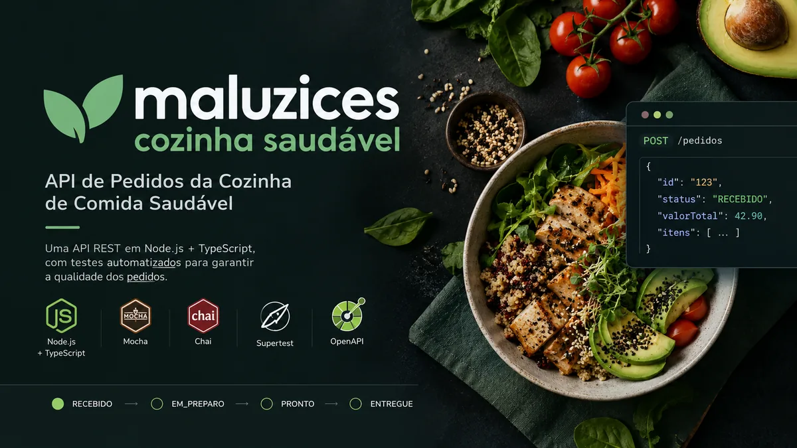

API de Pedidos | Cozinha Saudável
Projeto de QA de API: 96 casos derivados do contrato OpenAPI pela heurística VADER, com matriz rastreável e 13 defeitos documentados. Suíte automatizada em Mocha, Chai e Supertest, com CI no GitHub Actions. Inclui a API sob teste, em Node.js e TypeScript.
STATUS: concluída
- Missão
- Validar a API de pedidos a partir do contrato OpenAPI.
- Heurística
- VADER: verbos, autorização, dados, erros e responsividade.
- Cenários
- 96 casos de teste derivados do contrato OpenAPI, organizados em matriz rastreável.
- Evidência
- Suíte automatizada em Mocha, Chai e Supertest, executada em CI no GitHub Actions.
- Resultado
- 13 defeitos documentados e cenários rastreáveis ao contrato, com execução contínua a cada alteração.